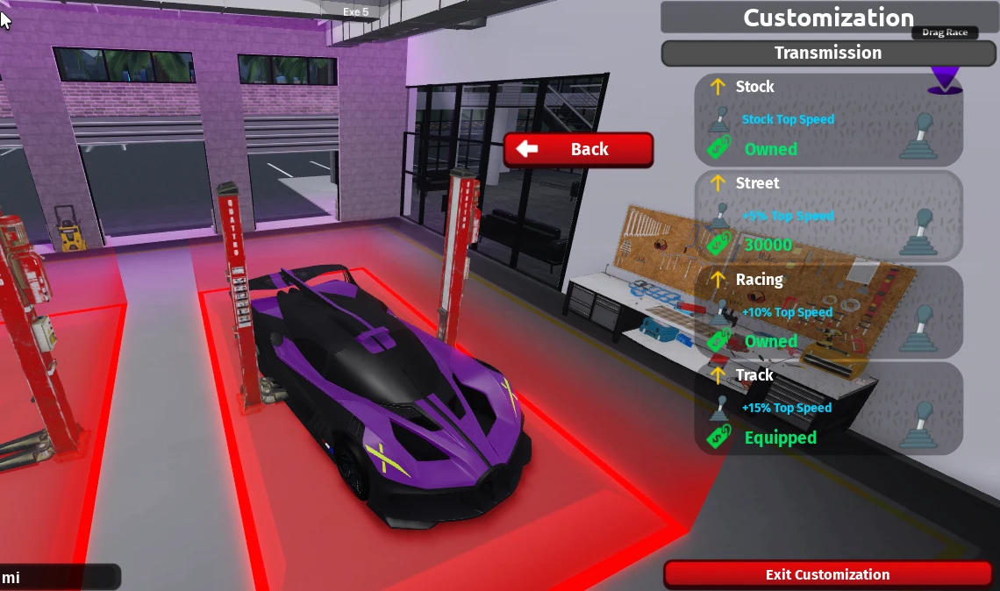
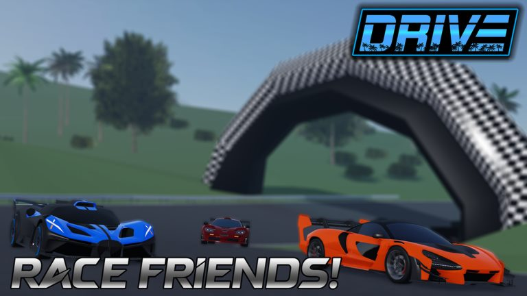
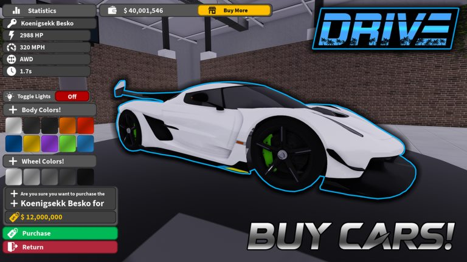
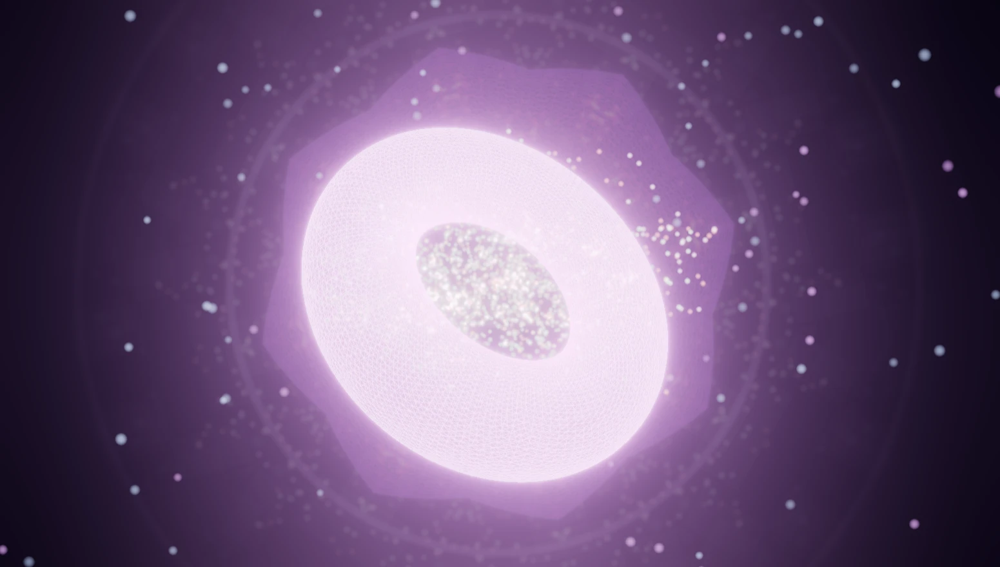
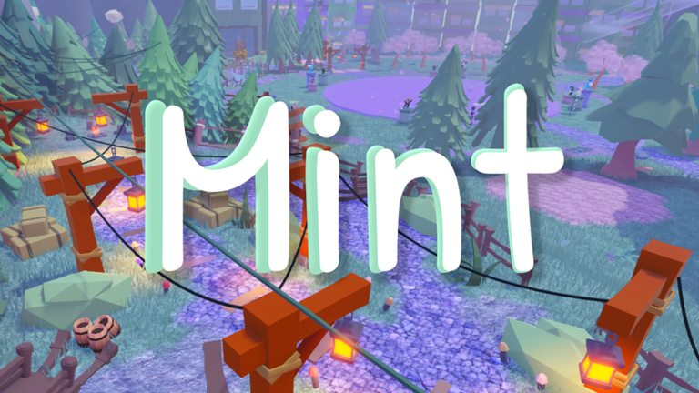
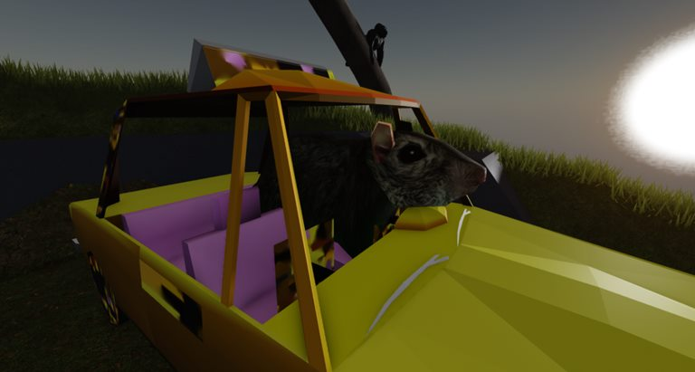

Macully Lineberger
Software developer in Hickory, North Carolina
I build games and business software. I wrote all of the code for DRIVE, a Roblox racing game with 5.8 million visits. Before that, I rewrote Ameritech Data Solutions' reporting app in C#.
DRIVE
5.8Mvisits on Roblox
DRIVE is a semi-realistic arcade racing game on Roblox. I built it with one partner and wrote all of the Luau code. We ran it live from 2022 to 2025.
- Released
- July 2022
- Team
- Two developers
- My part
- All of the Luau code, plus architecture, testing, and live deployment
- Server size
- 20 players
- Favorites
- 26,000+
The cars use semi-realistic arcade handling that takes practice to drive well. In this clip, GameTimeKyle, a YouTuber with 104,000 subscribers, drifts a car for the first time in his video.
Clip from "BUILDING A S14 in Roblox Drivers Paradise" by GameTimeKyle, 4:18 to 4:48.

Players customize their cars in the garage. Cosmetic options include paint, special wraps, wheels and rims, and underglow. Performance upgrades cover the engine, transmission, and suspension tuning. The transmission tiers shown here raise top speed by 5, 10, or 15 percent.
Some cars are limited releases. When they go off-sale, the dealership still lists them, and players can filter by limited, new, or off-sale cars, or by price, top speed, and year. Each listing shows top speed, horsepower, and drivetrain.
Clip from "NEW CONTENT UPDATE OUT NOW IN ROBLOX DRIVERS PARADISE!!" by Mattyz, 1:09 to 1:38.
DRIVE has houses for players in the game world. This clip is from a video about the August 2022 update that added them.
Clip from "Brand New Update to Driver's Paradise!" by WTJCgaming, 2:23 to 3:20.

Players race their friends and compete on leaderboards.

Players earn cash by driving, and the game saves their progress between sessions.
Still images are DRIVE's Roblox thumbnails and in-game screenshots. Drivers Paradise was DRIVE's name in 2022.
TABopts Reporting 2020
Ameritech Data Solutions, 2018 to 2022
TABopts Reporting 2020 is a commercial app that HVAC test-and-balance firms use to collect readings in the field and produce reports for their clients. I was the lead developer on a two-person team, and I rewrote the app from legacy VBA into C#.
- Company
- Ameritech Data Solutions, Hickory, NC
- Team
- Two developers, with me as lead
- Stack
- C#, .NET, WinForms, Azure SQL Server, SQLite
- Users
- HVAC test-and-balance firms
What I built
- The C# rewrite. I moved the app off legacy VBA in Excel and Access and rebuilt it as a C# Windows desktop application.
- Office and Field modes. Technicians collect readings on their own devices without an internet connection, and the app syncs when they reconnect.
- Data layer and sync. Cloud data lives in Azure SQL Server and offline data in SQLite. My sync system resolves conflicts between the two and gives users merge tools, so several technicians can work on one project without overwriting each other.
- Permissions. Role-based permissions let admins restrict data by department and set access per user.
- Forms and data sheets. Firms prepare data sheets before a job, start from NEBB-compliant sheets or import their own, and export results to Microsoft Office templates.
- Customer support. I took support calls for the app and fixed problems on customers' computers over remote access.

Other projects
Newest first. Visit counts come from each game's Roblox page in November 2026.
| Image | Project | Year | Built with | Notes |
|---|---|---|---|---|
 |
Torus.WTF A web app that turns audio into real-time 3D visuals and exports video at up to 4K. |
2025 | Next.js, TypeScript, Three.js | Source code |
| CompleteHousing A housing system other Roblox developers can add to their games. The server checks each furniture placement, and layouts save per player. |
2024 | Luau | Code on GitHub | |
| Pillow Fight A Unity game that runs in the browser. |
2022 | Unity | Browser build | |
 |
Mint Minigames A minigame collection with diving, sliding, and wall running, plus loot boxes, pets, and global leaderboards. |
2021 | Roblox, Luau | 3,600+ visits |
 |
Experience Loot Box Picks a random Roblox experience and teleports the player to it. |
2021 | Roblox, Luau | 1,200+ visits |
| Gear Wars My first Roblox game. Players fight each other with Roblox gear. |
2010 | Roblox, Lua | 205,000+ visits |
Log
- 2025 to now
Torus.WTF
Started an open-source audio visualizer for the web.
- 2022 to 2025
DRIVE
Wrote all of the Luau code for a racing game that reached 5.8 million visits.
- 2021
Mint Minigames and Experience Loot Box
Released two Roblox games.
- 2018 to 2022
Application developer, Ameritech Data Solutions
Led development of TABopts Reporting 2020. I rewrote it from VBA into C# and built its data layer and offline sync.
- 2016 to 2018
Catawba Valley Community College
Earned an A.A.S. in Computer Programming with High Honors and the Excellence in Computer Programming Award.
- 2010
Gear Wars
Released my first Roblox game. It has since passed 205,000 visits.
Contact
I'm looking for software development work, including gameplay engineering and Roblox development. Email reaches me fastest.
macullylineberger@gmail.com